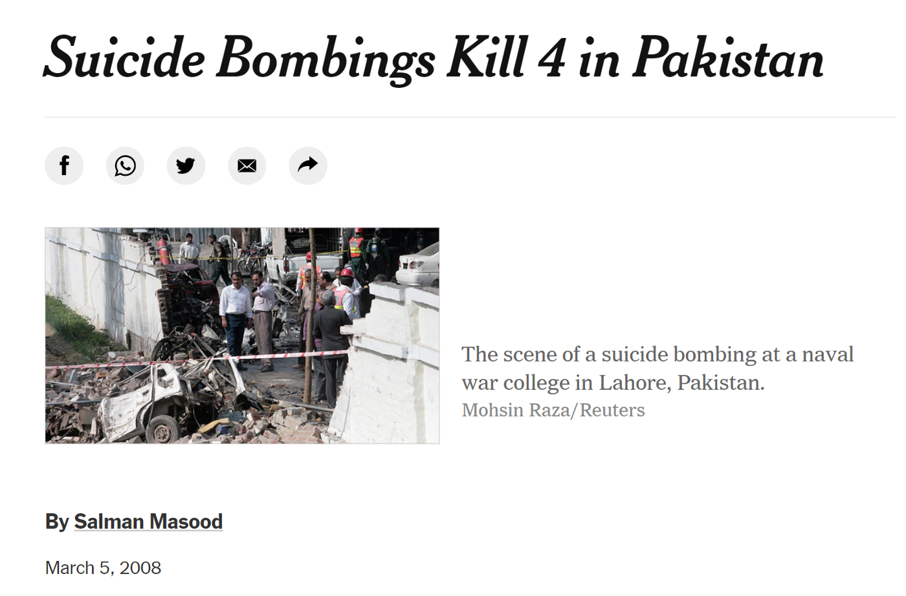

Boom
Nostalgia is akin to peering at the past through rose-tinted glasses. At least, that is what I
have told myself. I haven’t been one to indulge myself in it for many a year, yet my mind
wanders towards remembrance of ages past.
Memories that seem so distant, one wonders if they were yours in the first place — almost like of
another life, accessible yet separate.
Memory is a fickle thing.
Some memories are hazy. You can recall the day, the event, the moment but can you ever truly
remember everything? Lost conversations, missed connections, misplaced from your own mind.
Other memories are so deeply imprinted into your being that you wonder if you will ever forget.
I remember a day, long ago.
It was a different life, a different me…
It is March 5th 2008. Thirteen days ago to the very day. I recall the U.S elections were taking
place that year. Obama was leading in the polls and it seemed as if he would be the next US
President. My friends and I were chatting about it in the playground of our school. The school
itself was quite an elitist institution — an all-boys boarding school founded by the British
even before the birth of my own country. They made us wear shorts in winter to ‘toughen us up’.
God knows we needed it.
I didn’t linger on such things at the time though, few 11 year olds do — and I had been there
since I was 6. Don’t get me wrong though, the school was startling, we had a sprawling 200-acre
campus in the heart of Lahore, one of the oldest and grandest cities in the Asian sub-continent.
I made the best and worst friends of my life there. The teachers were awful sometimes and the
students were often worse. But this memory isn’t about Aitchison College, at least not in the
way that you imagine it.
The school timings forced me to wake up at 5:30 AM every day — for 12 years. And I hated it. To
this day I still cannot wake up early, almost as if my body is exacting vengeance on me for
those years. Either way I had to make my way to school before 6:30 AM, that’s when the gates
closed and they wouldn’t let you in. After morning assembly as I walked to class in the morning,
someone made a joke about Obama, a pun along the lines of “Obama-bin-Laden.” I chuckled but did
not understand the significance at the time — I don’t think anyone really did — but now
that I harken back to that moment, it is eerie how that joke was made on that day.
A few hours pass and I am sitting in my classroom on the first floor, waiting for the clock to
strike 2:10 so that I can go home. We still had an hour or so to go. My mother picked me up from
school every day since I was a child. As the years wore on and my friends and I became older,
their parents gradually came to pick them up less and less. Other parents sent their drivers
instead but my mum insisted on being there. Day after day at 2:10 on the dot — I would run into
her arms as soon as the bell rung.
Boom.
You hear a loud ‘Boom!’ in the distance, its loud enough to make the teacher pause in the middle
of her sentence. The windows of your classroom start rattling. A few of the classmates are
relieved at the temporary reprieve from studying.
The teacher begins again.
BOOM.
This time a few of your friends fall off their chairs — albeit jokingly — and the windows rattle
harder. You feel the vibration. As the teacher leaves the class to inspect what happened, the
class erupts into chatter. We thought it was an earthquake at first, but what earthquake sounds
like an explosion?
The teacher returns, horror on her face. We are told to evacuate the building.
BOOM!
This is not a drill.
This is not a drill.
As I make my way in an orderly line to the school grounds I look up at the sky. Smoke.
We all see the same thing, massive heaps of smoke coming from across the road, billowing streams
of black and grey overwhelm a corner of the clear blue sky. What happened?
BOOM!
Another explosion echoes into the sky. I understand now. I was no stranger to death but this was
the first time one happened so close to me.
Obama-bin-Laden
Ha. Ha.
There had been a terrorist attack at an Army Naval College across the street. Probably in
retaliation to the USA’s increasingly deadly drone program. We were living at the height of the
war on terror, and my country was suffering. Either we were with them or against them right?
That’s what Bush said in 2001, after 9/11. The world was grieving, and someone had to pay.
And so we sided with the United States — and signed the death warrants of 70,000 Pakistanis.
The Taliban waged war on my country, and ravaged it. I grew up reading newspapers with headlines
that would send shivers down your spine — till eventually those headlines stirred naught but
apathy in me. And that is because they were distant. The war was far away, or so it seemed —
till the day it was brought to my door.
Two suicide bombers attacked the college across the road. One blew himself up at the gate, the
other subsequently entered and ignited his suicide belt in the parking lot. The other two
explosions were cars that caught on fire and exploded after the terrorists killed themselves and
four others. I thought later ‘thank God only four died’.
You grow up quick in Pakistan — to some extent.
Nothing can prepare you for the horror of such a moment.
I stare at the smoke and remember my mother. It was time for her to pick me up. Then I realize
she would have been travelling toward my school on the road where the blast took place.
Tears enter my eyes.
“Mama are you dead?”
As I start crying, I can see I am not the only one. But I am ashamed. I need to be stronger.
A classmate looks at me, big smile on his face — and starts laughing.
Confusion.
How can this boy, in the midst of all this destruction, be so calm?
But then he says something I have never forgotten — “don’t cry, if you cry the terrorists win”
I stopped crying.
My classmates and I remain outside the school building for a few more minutes before the teachers
take us back inside, the show was over. I await my mother, hoping against hope that she is
alive.
How much time passes? An hour? A minute? I do not remember the time.
One by one, my friends’ parents pick them up, this time there is no driver. Tearful parents rush
to get a glimpse of their children who are by this point mostly consoled.
There are only a few of us left now and I am increasingly disheartened.
Then I see her, someone calls my name and I go to the door.
Mama.
I run into her arms one more time, thanking God that she is alive
All my fears and all my concerns melt into thin air. I begin to weep once again.
The next day, she sent me to school.

March 5 2021
https://www.nytimes.com/2008/03/05/world/asia/05pstan.html